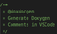

Install Visual Studio Code IDE and extensions
Visual Studio Code is the lightweight IDE from Microsoft.
Install Visual Studio Code
To install Visual Studio Code,
-
Download Visual Studio Code .
-
Install it.
For more information on Visual Studio Code,
-
Call the menu Help > Documentation: or
-
Visit the Getting Started page.
Install the recommended extensions
Visual Studio Code is based on extensions.
To install an extension using the command line,
-
Open a Terminal window.
-
Launch
code --install-extension ms-vscode.cpptools
To install an extension using the IDE:
-
Call the menu View > Extensions or press Ctrl+Shift+X.
-
Type the name of the extension to search it.
-
Select the extension and click on Install.
Note
If emCode is used on Windows Sub-system for Linux, the extensions may need to be installed on both the Windows and the Linux environments. Visual Studio Code provides accurate recommendations.
Install the extensions for C/C++
| Extension | Name | |
|---|---|---|
| C/C++ | ms-vscode.cpptools |
|
| IntelliCode | VisualStudioExptTeam.vscodeintellicode |
|
| Better C++ Syntax | jeff-hykin.better-cpp-syntax |
Install the extensions for Serial console
| Extension | Name | |
|---|---|---|
| Serial | vscode-serial-monitor |
Install the extensions to check the code
| Extension | Name | |
|---|---|---|
| C/C++ Advanced Lint for Visual Studio Code | jbenden.c-cpp-flylint |
|
| Multilingual, Offline and Lightweight Spellchecker | ban.spellright |
|
| Shortcut Menu Bar | jerrygoyal.shortcut-menu-bar |
|
| Icons | vscode-icons-team.vscode-icons |
|
| Workspace Storage Cleanup | mehyaa.workspace-storage-cleanup |
|
| Visible Whitespace | yoshi389111.visible-whitespace |
The C/C++ Advanced Lint manages different static analysers as CLang, CppCheck, FlawFinder and Lizard.
For download and documentation, please refer to
The Multilingual, Offline and Lightweight Spellchecker uses the dictionaries located at ~/.config/Code/Dictionaries, with default installed dictionary American English .
To use other dictionaries,
-
Download Google Chrome dictionaries with
.bdicextension from chromium/deps/hunspell_dictionaries . -
Link system dictionaries located at
/usr/share/hunspell/with.dicand.affextensions with
ln -s /usr/share/hunspell/* ~/.config/Code/Dictionaries
Visual Studio Code generates temporary files for each project. The Workspace Storage Cleanup extension manages them to save space.
Install the extensions to format the code
The C/C++ extension includes a formatter. As an option, Artistic Style provides more parameters.
| Extension | Name | |
|---|---|---|
| Artistic Style Format | chiehyu.vscode-astyle |
Artistic Style is a utility to indent, format and improve the presentation of the code.
The Artistic Style extension requires the prior installation of Artistic Style.
For download and documentation,
- Please refer to Artistic Style .
Artistic Style reads the ~/.astylerc file for the parameters to use.
For more information about the format options,
- Please refer to the Documentation page on the Artistic Style website.
Install the extensions to generate documentation
| Extension | Name | |
|---|---|---|
|  | Doxygen Documentation Generator | cschlosser.doxdocgen |
The Doxygen extension provides tools to generate the documentation. It requires the prior installation of Doxygen and optionally, GraphViz to generate graphs and LaTex to generate PDFs.
Doxygen generates all the help files based on comments added to the code. Output formats are HTML and LaTeX. Doxygen includes DoxyWizard, a GUI for an easy tweaking of the parameters. Doxygen requires Graphviz to draw elaborate dependency trees.
Finally, TeXShop translates the generated Doxygen LaTeX files into a PDF document.
For download and documentation, please refer to
Install the extensions to debug
| Extension | Name | |
|---|---|---|
| Serial Monitor | ms-vscode.vscode-serial-monitor |
|
| Cortex Debug | marus25.cortex-debug |
|
| Debug Tracker | mcu-debug.debug-tracker-vscode |
|
| RTOS View | mcu-debug.rtos-views |
|
| Memory View | mcu-debug.memory-view |
|
| Peripheral Viewer | mcu-debug.peripheral-viewer |
The Serial Monitor extension provides a minimal interface for debugging through serial port.
The Cortex Debug extension works with Segger J-Link, OpenOCD, STM32CubeProgrammer ST-Link and Texane ST-Util as GDB servers. The MCU-Debug extensions add services to the Cortex Debug extension.
The Cortex Debug extension requires the prior installation of J-Link, OpenOCD, ST-Link and Texane ST-Util.
For download and documentation, please refer to
-
OpenOCD ;
-
STMicroelectronic ST-Link , part of STM32CubeProgrammer;
The Segger J-Link probe may need
nano 99-segger-vcom.rules
ACTION!="add", SUBSYSTEM!="usb_device", GOTO="segger_rules_end"
ATTRS{idVendor}=="1366" ENV{ID_MM_DEVICE_IGNORE}="1"
#ATTRS{idVendor}=="1366" ATTRS{idProduct}=="0105", ENV{ID_MM_DEVICE_IGNORE}="1"
LABEL="segger_rules_end"
Save and close with Ctrl+O Ctrl+X
sudo su
chown root 99-segger-vcom.rules
chmod u=rw 99-segger-vcom.rules
chmod a+r 99-segger-vcom.rules
ls -l 99-segger-vcom.rules
cp 99-segger-vcom.rules /etc/udev/rules.d/99-segger-vcom.rules
udevadm control --reload-rules
exit
And, if JLinkGDBServer complains about missing libraries,
sudo apt install libncursesw5
The Cortex Debug extension requires a modern GDB client, version 9 or later. Some boards packages include older versions of the GDB client.
sudo apt update
sudo apt install gdb-multiarch
For more information on the Cortex Debug extension,
- Please refer to the Cortex-Debug wiki.
Install the AI-infused extensions
| Extension | Name | |
|---|---|---|
| GitHub Copilot | GitHub.copilot |
|
| GitHub Copilot Chat | GitHub.copilot-chat |
The two GitHub Copilot extensions provide AI-infused helpers for code editing.
| Extension | Name | |
|---|---|---|
| Continue | Continue.continue |
|
| Codeium | Codeium.codeium |
|
| Qodo Gen | Codium.codium |
The Continue extension supports remote and local AI models. The Codeium extension eases the evaluation of the Windsurf IDE. The Qodo Gen extension was formerly the Codium extension.
| IDE | Link | |
|---|---|---|
| Windsurf Editor | Windsurf | |
| Flexpilot IDE | Flexpilot | |
| Zed IDE | Zed |
The Flexpilot IDE, Windsurf Editor (formerly Codeium extension) and Zed IDE are variants based on the Visual Studio Code - Open Source (Code - OSS) with integration of AI-based capabilities.
Install the extensions for Windows Sub-system for Linux
The Windows Sub-system for Linux runs a Linux distribution in Windows. This option is faster and more stable than other options like MinGW, Cygwin or MSYS2.
| Extension | Name | |
|---|---|---|
| Visual Studio Code Remote SSH | ms-vscode-remote.remote-ssh |
|
| Visual Studio Code Remote WSL | ms-vscode-remote.remote-wsl |
|
| USBIP Connect | thecreativedodo.usbip-connect |
WSL may require the manual installation of some utilities.
sudo apt install git bc curl tree python3 pip
For more information on WSL, please refer to
- Windows Subsystem for Linux Documentation ;
- Install Linux on Windows with WSL ;
- Visual Studio Code WSL extension;
- Developing in WSL with Visual Studio Code.
The USBIP Connect extension allows WSL to access USB devices connected to the computer.
It requires the installation of two utilities.
- usbipd-win shares connected USD devices with WSL; and optionally
- WSL USB Manager provides a GUI interface for
usbipd-win.
To attach a USB device to WSL,
On Windows,
- Launch WSL USB Manager;
- Identify the
COMport of the board; - Select it and click on Bound;
- Select it again and click on Attach.
The selected port now appears under the Forwarded Devices list, and is available on the WSL-hosted Linux distribution, albeit with limited authorisations.
On the WSL-hosted Linux distribution,
- Open a Terminal window;
ls -all /dev/ttyACM0
crw-rw---- 1 root dialout 166, 0 Jun 26 13:20 /dev/ttyACM0
- Change the authorisation of the USB device to allow read and write, as it is protected by default.
sudo chmod 666 /dev/ttyACM0
ls -all /dev/ttyACM0
crw-rw-rw- 1 root dialout 166, 0 Jun 26 13:20 /dev/ttyACM0
For more information on connecting USB devices to WSL, please refer to
The USB devices need to be declared on WSL as with any other standard Linux installation.
Update Visual Studio Code
Update IDE
Visual Studio Code checks itself for updates. Alternatively,
- Call the menu Help > Check for updates.
Update extensions
Visual Studio Code checks itself for updates. Alternatively,
- Call the prompt Ctrl+Shift+P and then enter Extensions: Check for Extension Updates.